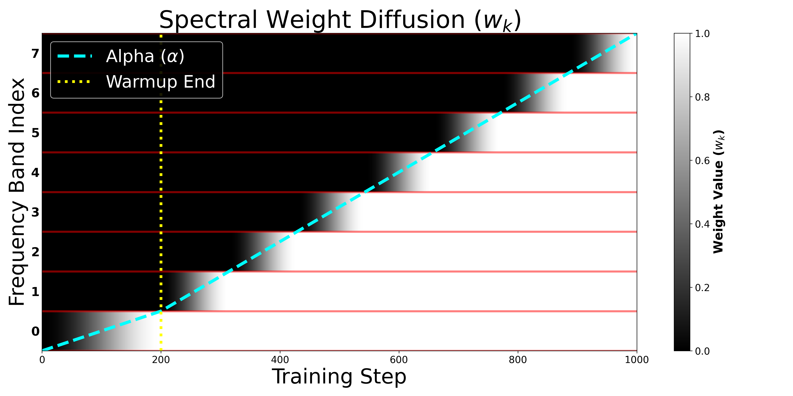
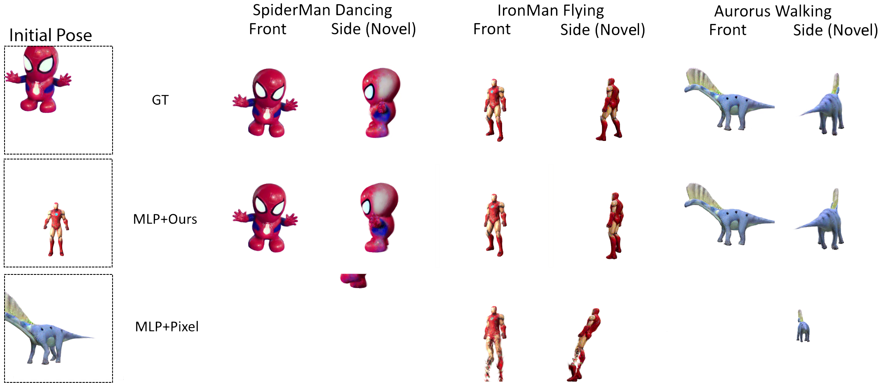
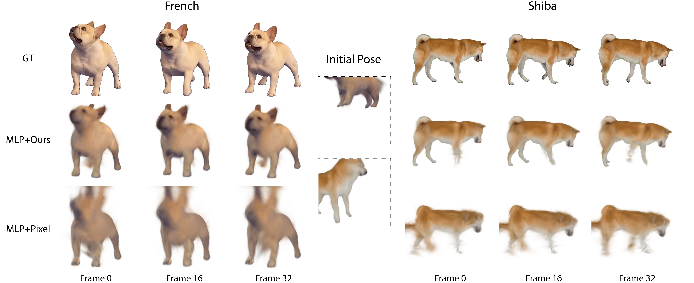

Abstract
3D Gaussian Splatting (3DGS) enables real-time, photorealistic novel view synthesis, making it a highly attractive representation for model-based video tracking. However, leveraging the differentiability of the 3DGS renderer "in the wild'" remains notoriously fragile. A fundamental bottleneck lies in the compact, local support of the Gaussian primitives. Standard photometric objectives implicitly rely on spatial overlap; if severe camera misalignment places the rendered object outside the target's local footprint, gradients strictly vanish, leaving the optimizer stranded. We introduce SpectralSplats, a robust tracking framework that resolves this "vanishing gradient" problem by shifting the optimization objective from the spatial to the frequency domain. By supervising the rendered image via a set of global complex sinusoidal features (Spectral Moments), we construct a global basin of attraction, ensuring that a valid, directional gradient toward the target exists across the entire image domain, even when pixel overlap is completely nonexistent.
Method Overview
Why pixel loss fails

Frequency annealing

2D Optimization Demo

Qualitative Results
SC4D Benchmark

GART (Real World)

Citation
@inproceedings{spectralsplats2026,
title={SpectralSplats: Robust Differentiable Tracking via Spectral Moment Supervision},
author={Cohen Rimon, Avigail and Mann, Amir and Ben Chen, Mirela and Litany, Or},
booktitle={Proceedings of the IEEE/CVF Conference on Computer Vision and Pattern Recognition (CVPR)},
year={2026}
}